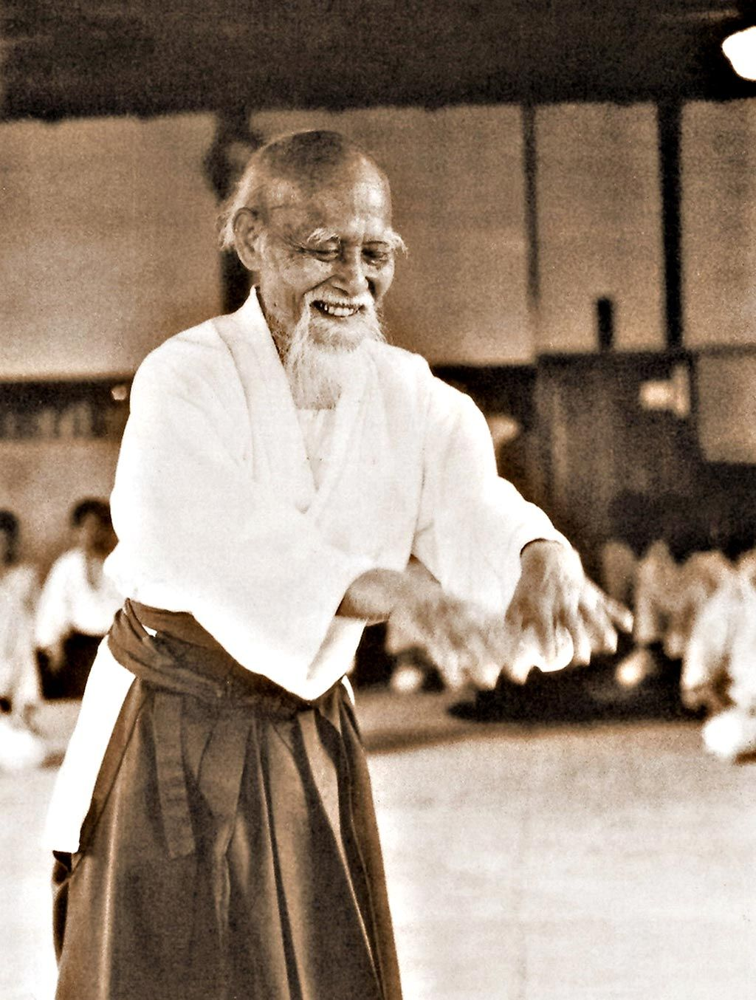

Aikido
Az aikidó (合気道, nyugaton Aikido, Aikidō) tradicionális alapokra épülő modern, japán harcművészet. Alapítója Uesiba Morihei, ismertebb nevén O-szenszej, azaz „Nagymester”, „Nagy tanító”.  Az aikidó gyakorlati technikái a kifinomult mozgáson, az ellenfél erejének érzékelésén és elvezetésén, valamint annak szétszórásán vagy az ellenfélre való visszafordításán alapulnak. Az Alapító (Uesiba Morihei) megfogalmazása szerint az aikidó egy olyan Út, amellyel le tudjuk győzni a konfliktusokat magunkban, és amellyel békét teremthetünk a Világegyetemben. Ennek megfelelően az aikidó gyakorlása során nem létezik ellenfél vagy ellenség, hanem partner van, akit vezetnünk és irányítanunk kell. A gyakorlónak tehát nem a pusztításra, hanem minden esetben az építő jellegű konfliktuskezelésre kell törekednie.
Uesiba Morihei, az Alapító fiatal korában számos harcművészetben szerzett magas szintű tapasztalatot. Ezek közül a Takeda Szókakutól tanult Daitó-rjú Dzsú Dzsucu és a Jagjú Sinkage-rjú Kendzsucu hatásai, valamint a kínai belső irányzatok közül ismert Pakua Csang kitérő mozgástechnikái a legszembetűnőbbek.
Az alapító spirituális fejlődésére – a harci gyakorlatok mellett – jelentős befolyással volt az, hogy az Omoto-kjó nevű sintó szekta követőjévé vált. A szekta célja a „Béke Királyságának” megalapítása volt, amelyet Mongólia területén szerettek volna felépíteni. Ez a szellemi hatás az aikidóban is jelentkezik. Ó-szenszej ennek hatására ismerte fel, hogy a budóban a harcművészetek gyakorlása és a filozófiai, spirituális tanítások ismerete egyaránt fontos. Az aikidó alapelvei a későbbiektől szorosan a taoista világképre épülnek, s ahogy Uesiba Morihei is sokszor hangsúlyozta: az aikidó megvalósítása során elengedhetetlen a Jin és jang kölcsönhatásának a megismerése, és a gyakorlatban történő alkalmazása.
Ha többet szeretnél olvasni az aikidoról akkor itt még találsz információt.